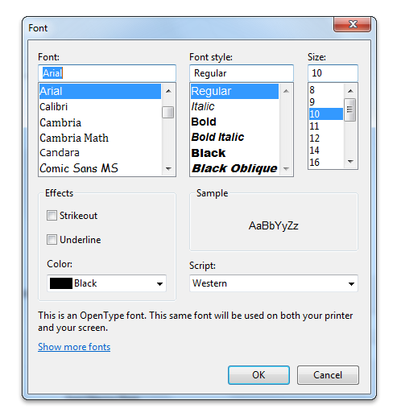
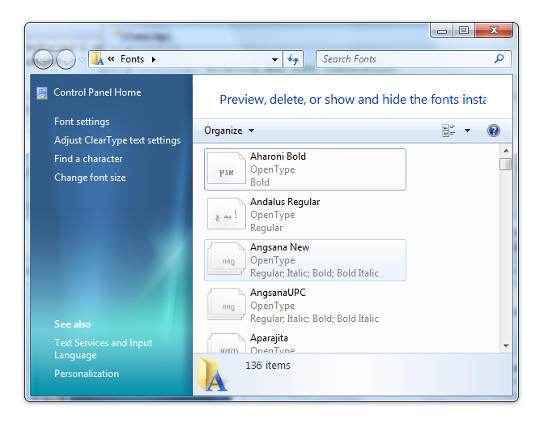

title: Font Dialog Box description: The Font dialog box lets the user choose attributes for a logical font, such as font family and associated font style, point size, effects (underline, strikeout, and text color), and a script (or character set). ms.assetid: e8a996aa-4e34-45d0-a325-9c20b1a6ce07 keywords:
The Font dialog box lets the user choose attributes for a logical font, such as font family and associated font style, point size, effects (underline, strikeout, and text color), and a script (or character set).
You create and display a Font dialog box by initializing a CHOOSEFONT structure and passing the structure to the ChooseFont function.
The following screen shot shows a typical Font dialog box.
If the user clicks the OK button, the ChooseFont function returns TRUE and sets the information about the user's selection in the CHOOSEFONT structure.
If the user cancels the Font dialog box or an error occurs, ChooseFont returns FALSE and the contents of the LOGFONT structure are not defined. You can determine the cause of an error by using the CommDlgExtendedError function to retrieve the extended error value.
The following topics are discussed in this section.
Before calling ChooseFont, the Flags member of the CHOOSEFONT structure must specify CF_SCREENFONTS, CF_PRINTERFONTS, or CF_BOTH, to indicate whether the dialog box should list screen fonts, printer fonts, or both. If you specify CF_PRINTERFONTS or CF_BOTH, the hDC member of the CHOOSEFONT structure must specify a handle to a device context for the printer.
If the CF_PRINTERFONTS or CF_BOTH flag is set, the font type description label appears at the bottom of the Font dialog box.
Starting with Windows 7, the CF_PRINTERFONTS, CF_SCREENFONTS, CF_BOTH, and CF_WYSIWYG flags are no longer used by the ChooseFont function for font enumeration. They are obsolete in Windows 7. However, the CF_PRINTERFONTS flag retains one function: to display the font type description label at the bottom of the Font dialog box.
You can use the Flags member to enable or disable some of the Font dialog box controls, and you can use the Flags member in conjunction with other CHOOSEFONT members to control the initial values of some controls.
To display the controls that allow the user to select strikeout, underline, and color options:
To specify the initial values for the Font, Font Style, Size, Strikeout, and Underline dialog box controls:
To initialize the Font Style control to a specified style name
[!Note]
To globalize your application, specify the style by using the lfWeight and lfItalic members of the LOGFONT structure that is pointed to by lpLogFont. The style name may change depending on the system user interface language.
Â
To display the Apply button
To display the Help button
To restrict the fonts displayed in the dialog box
Starting with Windows 7, the list of fonts displayed in the dialog box is restricted based on the user's shown fonts. To remove the restriction, set the CF_INACTIVEFONTS flag.
To restrict the typeface names, styles, and point sizes that the user can specify
To restrict or disable the Scripts combo box
You can provide a custom template for the Font dialog box, for example, if you want to include additional controls that are unique to your application. The ChooseFont function uses your custom template in place of the default template.
To provide a custom template for the Font dialog box
You can provide a CFHookProc hook procedure for the Font dialog box. The hook procedure can process messages sent to the dialog box and send messages to the dialog box. If you use a custom template to define additional controls, you must provide a hook procedure to process input for your controls.
To enable a hook procedure for the Font dialog box
After processing the WM_INITDIALOG message, the dialog box procedure sends a WM_INITDIALOG message to the hook procedure. The lParam parameter of this message is a pointer to the CHOOSEFONT structure that is used to initialize the dialog box.
The hook procedure can send the WM_CHOOSEFONT_GETLOGFONT, WM_CHOOSEFONT_SETLOGFONT, and WM_CHOOSEFONT_SETFLAGS messages to the dialog box to get and set the current values and flags of the dialog box.
The following screen shot shows a typical Font dialog box in Windows 7.

In earlier Windows versions, the font.dlg template file contains one default ChooseFont template. The font.dlg template file on Windows 7 contains two default templates: the default template from earlier Windows versions and the new Windows 7 ChooseFont template. Therefore, when you customize the Font dialog box on Windows 7, you must consider the following issues.
Use the new template when you create custom templates for applications that run on Windows 7. This new template contains a link control that the user can click to launch the Fonts Control Panel window, as shown in the following screen shot.

To use this link control, your calling application must use the COMCTL32.DLL version 6 or later. Otherwise, the ChooseFont function returns an error when it tries to create the link control in your custom template. To determine if this control is enabled, compile your calling application against COMCTL32.DLL version 6.0. For more information, see Enabling Visual Styles with Common Controls.
If your application uses COMCTL32.DLL version 5.0 or earlier, you must do the following when you create a custom template:
Specify the control as a PUSHBUTTON. The control used to launch the Fonts Control Panel will appear as a button rather than as a link.
Replace the following text in the font.dlg:
CONTROL "<A>Show more fonts</A>", IDC_MANAGE_LINK, "SysLink", WS_TABSTOP, 7, 199, 227, 9
with the following text:
PUSHBUTTON "S&how more fonts", IDC_MANAGE_LINK, 7, 199, 74, 14 , WS_TABSTOP
To ensure that your application uses a custom template, you must specify a custom template with the CF_ENABLETEMPLATE flag, create a custom template based on the Windows 7 ChooseFont template, and then optionally enable a hook procedure.
If you enable a hook procedure without creating a custom template, the default ChooseFont template for earlier Windows versions will be loaded.
[!Note]
You must specify the CONTROL or PUSHBUTTON control type in your new template, depending on the version of COMMCTL.DLL that your application compiles against. Also note that Windows 7 specific features, such as WYSIWYG display of font lists and extended families, are not available when your applications run on earlier versions of the Windows operating system.
Â
Â
Â